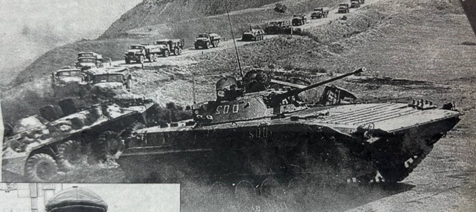
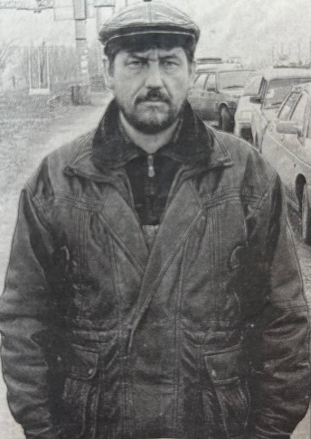
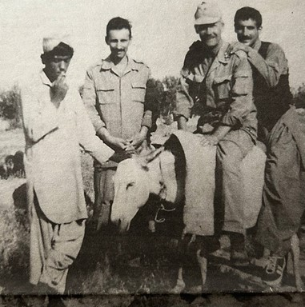

Дело настоящего мужчины — стоять на защите мирного труда своего народа. «А почему бы и не попробовать?» — решил тогда
Юра, подбодренный отцом.
Дорогу в небо Юрию Патеюку открыло Саратовское высшее военное училище летчиков, которое он окончил в 1984 году. Выпускник — летчик транспортного вертолета Ми-8 получил назначение в Забайкальский военный округ, в город Могочу Читинской области.
Молодой офицер освоил новую летающую машину — стал летчиком-оператором впоследствии не менее легендарного, чем Ми-6, боевого вертолета Ми-24.
О «легкости» службы там военнослужащие шутили: «Бог создал Сочи, а черт — Могочу»... Летом — неимоверная жара, зимой - лютые холода. И постоянные пронизывающие ветры.
В 1986 году смешанная эскадрилья (на вооружении в ней состояли вертолеты Ми-8 и Ми-24) 335-го отдельного вертолетного полка, базировавшаяся в афганском городе Джелалабад, получила усиление в лице молодых пилотов, в их числе оказался и летчик-оператор лейтенант Юрий Патеюк.
Перед отправкой в Афганистан в узбекском городе Чирчик мы поучаствовали в так называемой эстафете вертолетчиков, - вспоминает Юрий Михайлович. — Там, в учебном вертолетном полку, в течение месяца нас учили летать в горах, готовили к реальной боевой работе.
Полеты были интенсивными, напряженными.
А эстафетой их называли потому, что офицеры-летчики словно участвовали в соревновании. Прибывали в часть, тут же приступали к полетам — и через, казалось, мгновенно закончившийся месяц отправлялись в Афганистан.
А инструкторы «учебки» уже занимались подготовкой вновь прибывших вертолетчиков...
В Афганистане вертолеты Ми-24 смешанной эскадрильи 335-го овп выполняли задачи прикрытия Ми-8, которые десантировали и эвакуировали советских воинов. Часто вылетали парой или звеном на выполнение «внезапно возникающих задач» — уничтожение душманов, их складов.
Летчик-оператор боевого вертолета Ми-24 в основном занимается ведением ориентировки, штурманским делом, выполняет обязанности стрелка. Юрию Патеюку пришлось поучаствовать в нескольких масштабных операциях по уничтожению боевиков. Количеством привлеченных вертолетов армейской авиации и самолетов-штурмовиков, подразделений десантных войск, их огневой мощью офицеру особо запомнилась операция, проведенная советскими войсками в Марульгарском ущелье. Его вертолет в составе звена прикрывал «восьмерки» (вертолеты Ми-8), перевозившие десантников.
...Беседуя с Юрием Михайловичем, я признался: боевой вертолет, зависший над землей, всегда казал-ся мне легкой мишенью.
— Возможно, но не все так просто, как кажется, — опытный офицер задумался, словно вновь оказался в кабине своего боевого вертолета, и стал разъяснять: — Для выполнения различных боевых задач разработаны соответствующие боевые порядки. Например, в то время, когда Ми-8, приземлившись, выгружал десантников, три или четыре вертолета Ми-24 занимали в небе, можно сказать, круговую орону и держали под прицелом все вокруг. Душманы — они ведь тоже не хотели погибать и поэтому не показывались из укрытий.
А при атаке сложных объектов, когда необходимо было зайти на цель несколько раз, вертолеты кружили, сменяя один другого на боевом курсе атаки и таким образом не давая врагу возможности высунуться и ударить в ответ.
Было ли страшно выполнять боевую задачу, зная, что она может оказаться последней? Об этом Юрий Патеюк старался не задумываться. Он летал под началом опытного вертолетчика капитана Брежнева, и им повезло вернуться домой живыми и невредимыми. Душманы стреляли по ним, они стреляли в ответ — и оказывались точнее... За крепкую броню и высокую живучесть благодарили свой вертолет. К слову, именно по этой причине Ми-24 получил прозвище «летающий танк».
Кстати, через несколько лет после войны в Афганистане судьба снова свела боевых товарищей вместе — в Беларуси, в 181-й боевой вертолетной базе...
- После выполнения боевой задачи мы нередко считали пробоины на нашем вертолете,
- продолжает
рассказ о войне полковник Юрий Патеюк. — Но серьезных повреждений не было. Находясь на земле, ждали возвращения с задания товарищей, конечно же, переживали, когда борта задерживались...
Помню, как искренне радовались за уцелевших однополчан.
Однажды произошел поистине уникальный случай. В летящий Ми-24 душманы выстрелили из переносного зенитного ракетного комплекса типа «Стингер». Командир экипажа заметил пуск ракеты и накренил вертолет, прикрывая сопло двигателя подвесным блоком неуправляемых авиационных ракет, подвешенным на крыле. Ракета с инфракрасной тепловой головкой наведения попала точно в тот блок, разнеся его вдребезги. Осколки все-таки повредили двигатель, но вертолет продолжил полет на втором, уцелевшем движке - и экипаж приземлился на площадку, охраняемую советскими войсками. Больше и не припомню, чтобы кому-нибудь еще так удачно удавалось «подставить бок». Боевые вылеты совершались практически ежедневно. От этого детали вертолетов, безусловно, быстро изнашивались. Тем более что эксплуатация «вертушек» в условиях боевых действий нередко граничила с предельными перегрузками. Как же авиаторы справлялись с этим? Юрий Михайлович рассказывает, что «технари» днями и ночами штопали и восстанавливали, обслуживали боевые машины. Но поломки в воздухе, конечно же, случались.
— В мирное и в военное время к ним совсем разное отношение, - пояснил опытный вертолетчик.
—Сейчас, если, не дай бог, что-то произойдет в воздухе, пилот обязан сразу найти подходящую площадку и приземлиться. Но на войне главным было долететь до своих, сохранить жизнь.
Однажды во время ночного полета на высоте 3,5 километра, между Асадабадом и Джелалабадом (примерно в десяти километрах от пакистанской границы), у нашего вертолета отказала основная гидро-система. Ситуация довольно сложная, по сути, нам нужно было прыгать, что мы и готовы были сделать. Ведь если бы это оказался порыв шланга, буквально через две минуты жидкость гидросистемы под давлением вытекла бы — и вертолет стал бы неуправляемым. Останавливало нас место, где это произошло, и время. По сути, выпрыгни мы здесь, на вражеской территории, и нас навряд ли нашли бы. Да и никогда не стремятся летчики оставлять свою машину — стараются испробовать все возможные варианты, чтобы спасти и себя, и ее... Время шло, а вертолет продолжал лететь. Мы приземлились на ближайшей площадке, контролируемой советскими войсками, и уже там обнаружили, что в трубопроводе образовалась трещина. Полного разрыва не произошло — это и позволило нам долететь... Через пару дней инженерно-технический состав отремонтировал вертолет, и он снова выполнял боевые задачи. Врученная полковнику Юрию Патеюку в прошлом году высокая награда, конечно же, дорога офицеру. Но полученный им за успешное выполнение заданий правительства СССР по оказанию интернациональной помощи народу Демократической Республики Афганистан орден «За службу Родине в Вооруженных Силах СССР» III степени — не только признание боевых заслуг, но еще и бесценная память... В 1987 году офицер Юрий Патеюк вернулся в Могочу и через месяц после возвращения «из-за речки» женился. В 1990 году он отправился в Германию — в город Стендаль, где базировался отдельный вертолетный полк. Летал, заступал на боевое дежурство.
В 1992-м полк вывели из Германии в Курск. Вертолетчики практически перестали летать... И тогда во время очередного отпуска, вернувшись на малую родину, офицер взял отношение в 181-м отдельном вертолетном полку. В России просьбу о переводе удовлетворили. И с 1993 года по сей день Юрий Михайлович служит в этой части близ города Пружаны. Военный летчик 1-го класса, с налетом около 1.800 часов, воин-«афганец» полковник Юрий Патеюк прошел в 181-й боевой вертолетной базе все должности от штурмана отряда до заместителя командира воинской части. Продолжает летать на грозном Ми-24 и Ми-8. В качестве летчика-инструктора передает опыт молодым пилотам. И с удовольствием отмечает ежегодный рост их мастерства.
— Становление школы подготовки белорусских вертолетчиков прошло, можно сказать, на моих глазах, — рассказывает полковник Юрий Патеюк. — Например, в середине 1990-х годов в базу практически не приходили молодые летчики, так как система их подготовки с развалом Советского Союза была утрачена. А с началом 2000-х базу стали пополнять молодые офицеры - выпускники авиационного факультета
Военной академии Республики Беларусь. Их подготовка была не той, что в советские времена, но главное — было положено начало. Тогда и летали еще мало, но со временем интенсивность полетов возросла, следовательно, повысился и профессионализм летного состава. В последние годы в Военной академии значительно преуспели в его подготовке. Об этом свидетельствует тот факт, что молодые пилоты приходят в войска уже военными летчиками 3-го класса. Напоследок я попросил Юрия Михайловича дать совет молодым офицерам, будущим командирам экипажей вертолетов.
— Главное для вертолетчика — не потерять обороты несущего винта. Быть преданным своему делу, уверенным в себе и своем экипаже. Сохранять ясность мышления и хладнокровность в любой ситуации.
ОТСЛУЖИВ в Афгане полтора года водителем бензовоза, парень готовился к долгожданному дембелю. Зимой 1981-го он выехал в свой последний рейс в составе колонны, идущей из Кабула в Пули-Хумри. За руль машины, последней в колонне, Алексей в тот день садился с лёгким сердцем, зная наверняка, что совсем скоро он будет вспоминать о службе в армии как о дурном сне, затянувшемся на долгие 18 месяцев.
Проехав половину пути, Оленин остановил автомобиль, отправился по малой нужде и нарвался в кустах на засаду моджахедов. Их было восемь, он один, схватка длилась полтора часа. На исходе боя Оленин потерял сознание. Отбив солдату камнями ноги, афганцы оттащили обездвиженную жертву в горы.
Очнувшись, Алексей долго не мог понять, где находится. Пленника - голодного, грязного, с кровоточащими ранами, которые от сырости начали гнить, вытащили из ямы только спустя несколько дней. Моджахеды поставили Оленина перед выбором: ислам или смерть.
У моджахедов нашёлся "толмач", который по-русски объяснил Оленину, чего хотят от него его теперешние хозяева. Люди по-разному приходят к Богу, но для неверующего парня, рождённого в атеистическом СССР, религия, пусть чужая, стала спасительной соломинкой, за которую Алексеи и уцепился. Больше надеяться было не на что, а Бога, которого требовалось предать, у Алексея и так не было.
В 1989 г. последний советский танк покинул Афганистан, а Алексей остался в городе Пули-Хумри. Несмотря на переговоры, которые вела наша сторона, моджахеды не согласились отпустить нашего солдата. Алексей знал, что в Афгане есть ещё много таких, как он, пленников, и знал так-же, что ни одному из них не удалось бежать на свободу.
- Все попытки заканчивались смертью, поэтому он и не пытался обмануть судьбу. Долгие 12 лет Оленин обрабатывал пшеничные поля под присмотром афганцев.
Пленник питался чем придётся, жил в продуваемой всеми ветрами хижине. Почему предпочёл такую жизнь смерти, сейчас он и не объяснит. Свыкся, а может, в глубине души всё же ждал чего-то? И вдруг судьба подбросила неожиданный подарок.
В 1993 г. Оленина и ещё одного советского парня отправили в Пакистан. Эти двое стали орудием в руках премьера Пакистана Беназир Бхутто, которая с их помощью решила продемонстрировать своё лояльное отношение к России. Бывших воинов из Афганистана доставили во дворец в Исламабад, где проходили российско-пакистанские переговоры. Измученные рабской жизнью пленники были тут же освобождены и "обласканы" премьер-министром - на прощание та выдала им по толстой пачке денег. Спустя несколько часов Алексей впервые за 12 ступил на родную землю. Россия 1993 г. сильно его удивила. На парня обрушил-и новоявленный капитализм во всех его проявлениях - коммерческие палатки на каждом углу, неоновая реклама, эротические газеты на лотках. Новая жизнь так ошеломила Оленина, что через полгода он… вернулся в Афганистан. АФГАНЦЫ, которые до освобождения "опекали" Алексея, поступили хитро.
Зная о готовящемся отъезде русского в Пакистан, они сосватали за Оленина Наргиз 14-летнюю девочку из многодетной бедной семьи. Глаза молоденькой девушки, в которых кротость соседствовала с надеждой и нескрываемым интересом к чужестранцу, запали в душу Алексею. С того самого дня и до его отъезда они не расставались.
За ней и вернулся Алексей из родного дома, да опять надолго застрял в Афганистане.
"Без золота женщина замуж не пойдёт, рассказывает Алексей.
За свою невесту Оленин заплатил калым с пакистанских денег в 3000 долларов, купил молодой жене золотое ожерелье, кольца и браслет.
Сыграв свадьбу, Алексей переехал в дом к любимой. Молодожёнам выделили комнату в одноэтажном кирпичном доме. В соседней комнатушке ютились родные Наргиз - мать, отец и ещё четверо детей. На оставшиеся после свадьбы деньги 33-летний русский открыл в Пули-Хумри лавку, в которой продавалась разная мелочовка для немногочисленных туристов.
С утра до вечера он торговал, домой приходил лишь к ночи. Семья Наргиз не могла нарадоваться на нового кормильца. Так, из бесправного пленника он превратился в равноправного члена афганской семьи. Но Алексей работал в своей лавке как проклятый не ради этого: ему нужны были деньги, чтобы вернуться на родину с молодой женой.
По приезде в Россию мытарства Оленина не закончились. Сначала скитался с семьёй по углам, потом в Отрадном, откуда он родом, снял однокомнатную квартиру. По афганским законам Алексей и Наргиз были мужем и женой. По российским им пришлось доказывать это, пройдя через бюрократический ад. Теперь Оленину нужно удочерить свою же собственную дочь, потому что у четырехлетней Джасмин нет свидетельства о рождении.
С РАБОТОЙ у Алексея тоже проблемы. Как водитель он уже потерял квалификацию. Медкомиссию ему не пройти: в Афгане он сильно болел, тяжёлая работа ему теперь противопоказана. В частных структурах бывшему солдату говорят, что возраст уже не тот. Язык дари, которым в совершенстве владеет Алексей, тоже никому без диплома не нужен, хотя в той же Самаре нет ни одного переводчика с этого языка.
Вот и получается, что из одного плена Алексей попал в другой, состоящий из бесконечной бумажной волокиты и хождений по кабинетам чиновников.
Иногда его онять тяней в Афганистан, где всё просто и ясно: вот твоя семья, твоя лавка, что заработаешь - твоё, и не надо ничего доказывать. А потом душа бунтует: должна же в конце концов родина признать его,
Алексея Оленина, - та самая родина, по чьей милости почти два десятка лет он не может обрести покой и выстроить жизнь по простой схеме: семья - дом - работа.
Разве 25-летними мытарствами он этого не заслужил?
 ...По пути домой наша колонна остановилась на последний привал.
Вдруг кто-то закричал: «Перелетные гуси!».
Старший мгновенно скомандовал: «Огонь!».
Десятки автоматных пуль полетели ввысь по направлению к большому косяку птиц. Самое удивительное — попали! Огромная птица со свистом авиабомбы упала в сотне метров от нас. Но найти ее среди камней оказалось непросто. «Эх, сибирскую лайку бы сюда, — разочарованно сказал кто-то из офицеров. — Пропадет добыча». Однако вскоре один из солдат радостно заорал: «Нашел! Но на гуся не похожа». Это оказался пеликан. Все были очень удивлены. Если бы не тот случай, я бы и по сегодняшний день не знал, что пеликаны являются перелетными птицами. По прибытии в полк добычу решили сварить, хотя она и воняла сильно рыбой. Сварили. Однако съесть ее не удалось — мясо было словно резиновое, не жевалось. И это после нескольких-то часов варки! Отдали пеликана собакам. Собаки остались довольны. В Афганистане мы охотились на боевых операциях и на горных куропаток. Дашь очередь по стае - и обязательно в пару-тройку попадешь. Птица была маленькой, пуля ее всю выворачивала, но супы получались отменные. Однажды во время одной из боевых операций в предгорье мы обнаружили крупную нору. Если бы не большие иголки дикобраза, лежащие у входа, долго гадали бы, кому принадлежит жилище. От скуки дикобраза решили выкопать. Но не тут-то было: нора напоминала лабиринт, почти через каждый метр резко меняла направление. Однако сдаваться было не в наших правилах — все оказались одержимы идеей добыть зверя.
Взяв металлические штыри антенны, стали определять дальнейшее направление копания методом «втыка». Солдат с лопатами, ломами и кирками поочередно меняли — для ускорения рабочего процесса. Но дикобраз работал, закапываясь, быстрее нас. Ближе к вечеру командир махнул рукой: «Хватит валять дурака, бесполезно. Вы уже целый котлован выкопали — и все без результата». К новой охоте на дикобраза мы подготовились основательно. Как рассказали солдаты из Средней Азии, у норы единственный вход, пасется дикобраз только ночью, питается луковицами цветов. Ночью его и нужно ловить. Конечно, зверя проще было подстрелить из снайперской винтовки или автомата с прибором ночного видения. Но вокруг стояло оцепление, и командир стрелять запретил.
...Ночь выдалась лунная, безветренная. Взвод охотников затаился вокруг норы затемно.
Подождав, когда дикобраз удалится от жилища подальше, мы быстро его окружили и стали пытаться накинуть плащ-палатки. Однако животное очень ловко и быстро маневрировало среди камней и солдат, несмотря на неуклюжий внешний вид. В конце концов дикобраз юркнул в свою нору и больше не высовывался. Поймали мы его лишь на следующую ночь, наконец-то додумавшись завалить нору заранее приготовленными камнями. Командир по такому случаю расчувствовался, выделил из неприкосновенного запаса фронтовые сто грамм. Мясо оказалось очень вкусное.
Популярной была у нас и охота на змей. В брошенных кишлаках они водились в огромном количестве. Самой ценной добычей считалась жирная гюрза.
Змеи грелись на солнце, повиснув на ветках деревьев. Подойдя на прицельную дальность, стреляли. Выпотрошив змею, ее пару часов варили, после чего снимали шкуру, нарезали мясо ломтиками и жарили. Еда — пальчики оближешь! Никто не комплексовал, не брезговал. Просто нам всем очень хотелось натурального мяса - на консервы невозможно было уже смотреть.
Похожим способом стреляли мы и варанов. Мясо варана напоминало курятину, но все же ели его только истинные гурманы.
В реках Афганистана водится единственная рыба — маринка, да и та ядовитая. Кошки и собаки, съев ее, околевали очень быстро. Человек выживал, но болел — долго.
Однако на наших сторожевых заставах маринку научились готовить. Оказалось, надо отрезать голову, хвост, вырезать плавники и снять с брюха пленку. Все, рыба к употреблению готова. Ловили ее, конечно, гранатами, вялили в массовом количестве.
Пресноводные арыки и реки Афганистана буквально кишат крабами, несмотря на отсутствие прямого сообщения с морем-океаном. В отличие от нашего родного рака, у которого имеются шейка и клешни, мяса у афганского краба — раз-два и обчелся. Но ничего: когда за считанные минуты наловишь ведро тех, что покрупнее, да сваришь с лавровым листочком, да солью их и перчиком — вполне можно пировать.
В казармах и офицерских модулях почти сразу после заселения появлялись афганские тараканы. Были они размером с палец. Ужас! Если тараканов не уничтожать, то за два-три месяца их становилось неимоверно много, они начинали выживать людей. Местные коты и собаки там такие же, как и у нас на родине. Интересно, что афганские котяры на «кис-кис» не реагировали. Только на «кша-кша». Это было нам в диковинку. Самым массовым местным «транспортом» являются ослы. Они, между прочим, не такие уж глупые, как у нас, северян, принято думать. Без еды и воды, как и верблюды, обходятся ослы по нескольку дней, выносливы, обладают большой грузоподъемностью. Однажды мы увидели караван верблюдов, гарцующих по дороге, как цирковые лошади на арене. Это было странно. Афганцы объяснили: верблюды почуяли каракурта — самого ядовитого паука в мире.
Оказывается, едва различимый на глаз паучок может одним укусом мгновенно убить и верблюда, и лошадь. Очень опасны были черные скорпионы, тарантулы и фаланги.
С фалангами — огромными мохнатыми пауками — был связан популярный на наших сторожевых заставах тотализатор. Ловили фалангу и небольшую ящерицу агаму, которая, говорят, не изменилась со времен динозавров, и бросали их вместе в трехлитровую банку. Вопрос заключался в том, сколько сможет паук продержаться.
Фаланга сразу же кусала ящерицу за брюхо, и та на несколько минут теряла сознание. Как только агама начинала приходить в себя и шевелиться, фаланга жалила ее снова. Так продолжалось несколько раз. В конце концов яд у паука заканчивался, и очухавшаяся ящерица аппетитно съедала фалангу. В среднем у этого насекомого яда хватало на три-шесть укусов. Ставки (у солдат сигареты поштучно, у офицеров - пачками) делались в этих пределах.
В соседнем артиллерийском полку было свое развлечение — там изредка устраивали «бой гладиаторов». В качестве поединщиков выступали специально пойманные для этой цели кобра и любимый полковой варан Виктор. Жил он на территории полка в конуре и имя получил от слова «виктория» — победа. Он никогда не проигрывал! В бою с коброй варан оказывался очень ловок, и смерть змеи была только вопросом времени. Кобру Витя хватал мертвой хваткой за шею и, оставаясь на месте, медленно душил ее. Когда чувствовал, что кобра не дышит, медленно и гордо удалялся вместе с добычей. Один раз, оставаясь неподвижным на одном месте, варан душил змею почти сутки!
Настоящим бедствием для людей были афганские мухи, которые больно кусались и пили кровь, как комары. Они были всюду! Стоило только колонне остановиться, как всех нас сразу атаковали целые полчища этих насекомых. Приходилось постоянно отмахиваться. В казармах и общежитиях повсюду были мухобойки, клейкие ленты и различная отрава. Зайдя в комнату общежития, офицеры и прапорщики первым делом начинали бить мух - лишь потом приступали к своим делам. Хватало этого на час-два. Потом твари снова просачивались в помещение через всевозможные щели. В столовой каждое блюдо подавалось со специальным марлевым колпаком — иначе бы мухи его мгновенно облепили. Пищу мы принимали как можно быстрее, потому что они постоянно норовили залететь в рот. Нормой считалось случайно съесть за обедом трех-четырех мух — по-иному поесть не получалось. Этих насекомых в казармах и местах общественного пользования дважды в сутки травили каким-то суперраствором из распылителей. Но число мух — увы - не уменьшалось. Слава богу, эти маленькие кровожадные чудовища отдыхали по ночам. Помнится такой случай. Командиру полка, только что вернувшемуся из отпуска, замполит на совещании представил на утверждение план проведения выходного дня. Командир начал читать: Просмотр телепередачи «Утренняя почта»? Разрешаю. Сам с удовольствием посмотрю. «Служу Советскому Союзу»? Это — святое. Открытый чемпионат полка, финал? Почему вы не пишете, по какому виду спорта? Понимаете, товарищ полковник, здесь больше ничего нельзя писать. Это — чемпионат по охоте на мух...
Что-что? — удивленно спросил командир полка. — У вас с головой все в порядке?
Стоит вас без присмотра оставить, как вы сразу какой-то ерундой начинаете заниматься. Объясняйте, что это такое! Замполит объяснил. Чемпионат по охоте на мух — изобретение кандагарской бригады, во всех полках и отдельных батальонах такие соревнования уже провели.
Мы — последние. На наш чемпионат мы пригласили всех победителей из сосед-них частей и сделали их! До финала — никто не дошел. Вон, Виктор Николаевич, — и замполит показал на подполковника-зампотеха, — от управления полка тоже в финал вышел. Приходите болеть за наших! А на что мух ловить будете? - поинтересовался командир.
В качестве приманки мы будем использовать то, на что мухи больше всего любят садиться...
Что? — побагровел комполка. - Ловить — на «это»?
Да, — прозвучал уверенный ответ. -
Мухи чаще всего садятся на варенье, сладости разные. У нас будет сок с сахаром!..
Командир пришел - и не пожалел. Мероприятие было хорошо организовано и хорошо продумано. Из динамиков звучала музыка, всем было весело. На стадионе стояли столы со скатертями. Каждому участнику выдавалась пол-литровая банка, в которую наливали яблочный сок с мякотью. «На старт, внимание — марш!» На все мероприятие — 30 секунд. Сок должен был выпит как можно быстрее, и пустая банка ставилась на стол для ловли мух. С выключением секундомера банку нужно было захлопнуть ладонью. Жюри подходило к каждому, участник соревнования, аккуратно раздвигая пальцы, выпускал мух на волю. Отдельно подсчитывались убитые мухи, которые на момент хлопка оставались на краю банки.
Зампотех занял почетное четвертое место, уступив бронзовому призеру всего лишь две мухи. Результаты чемпионов не помню, но счет шел на десятки. Успех всецело зависел от умения быстро, не отрываясь, выпить пол-литра жидкости. А сладкий сок — это вам не кружка кваса, которая в жару выпивается залпом, это не прохладное пиво, которое вообще уйдет в организм за считанные секунды!.. Некоторые участники соревнований в отборочных турах за полминуты сок, щедро сдобренный сахаром, выпить не успевали и сходили с дистанции... Что с них взять - слабаки!
